Simple examples for verification of library's components
Information
Extends from Modelica.Icons.ExamplesPackage (Icon for packages containing runnable examples).
Package Content
| Name |
Description |
 IdealCBSwitchVerification IdealCBSwitchVerification
|
Ideal current bidirectional switch verification |
| SW1Verification
|
SW1 verification |
| SW2Verification
|
SW2 verification |
| SW3Verification
|
SW3 verification |
| CCMXVerification
|
CCMX models verification |
| CCM_DCMXVerification
|
Averaged CCM_DCM models verification |
| PVArrayVerification
|
PVArray verification |
| SimpleBatteryVerification
|
SimpleBattery verification |
| SwitchingPWMVerification
|
SwitchingPWM verification |
| SwitchingCPMVerification
|
SwitchingCPM verification |
| DeadTimeVerification
|
DeadTime verification |
| CPM_CCMVerification
|
Averaged CPM_CCM verification |
 CPMVerification CPMVerification
|
Averaged CPM verification |
 ParkTransformsVerification ParkTransformsVerification
|
Park transforms verification |
| PLLVerification
|
PLL verification |
| MPPTControllerVerification
|
MPPT controller verification |
Ideal current bidirectional switch verification
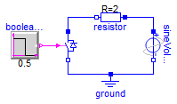
Information
This example presents a circuit composed of a resistor
in series with a sinusoidal AC voltage source and the
ideal current bidirectional switch. The switch is
operated by a step block that changes from 0 to 1 in the
middle of the simulation. This changes the state of the
switch from open to closed.
To use the example, simulate the model as provided and
plot the source voltage as well as the switch voltage,
the plot should look like this:
Notice how at the begining of the simulation, when the
switch is not closed, it blocks all the positive
voltage, preventing current from flowing. On the other
hand, the negative voltage is not blocked, so the
current can flow (through the anti-parallel diode). When
the switch is closed using the firing signal, it never
blocks voltage, allowing bidirectional flow of current.
Plot the voltage drop in the resistor to confirm these
results or play with the parameter values to see what
effects they have.
Extends from Modelica.Icons.Example (Icon for runnable examples).
Modelica definition
SW1 verification
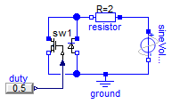
Information
Extends from Modelica.Icons.Example (Icon for runnable examples).
Modelica definition
SW2 verification
Information
Extends from Modelica.Icons.Example (Icon for runnable examples).
Modelica definition
SW3 verification
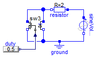
Information
Extends from Modelica.Icons.Example (Icon for runnable examples).
Modelica definition
CCMX models verification
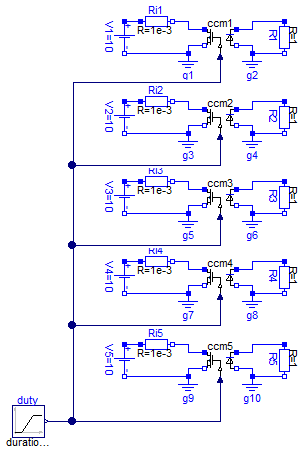
Information
Extends from Modelica.Icons.Example (Icon for runnable examples).
Modelica definition
model CCMXVerification
extends Modelica.Icons.Example;
Electrical.CCM1 ccm1;
Modelica.Blocks.Sources.Ramp duty(
duration=0.8,
startTime=0.1,
height=0.8,
offset=0.1);
Modelica.Electrical.Analog.Sources.ConstantVoltage V1(V=10);
Modelica.Electrical.Analog.Basic.Resistor R1(R=1);
Modelica.Electrical.Analog.Basic.Ground g1;
Modelica.Electrical.Analog.Basic.Ground g2;
Modelica.Electrical.Analog.Basic.Resistor Ri1(R=1e-3);
Electrical.CCM2 ccm2(
Ron=1,
RD=0.01,
VD=0.8);
Modelica.Electrical.Analog.Sources.ConstantVoltage V2(V=10);
Modelica.Electrical.Analog.Basic.Resistor R2(R=1);
Modelica.Electrical.Analog.Basic.Ground g3;
Modelica.Electrical.Analog.Basic.Ground g4;
Modelica.Electrical.Analog.Basic.Resistor Ri2(R=1e-3);
Electrical.CCM3 ccm3(n=2);
Modelica.Electrical.Analog.Sources.ConstantVoltage V3(V=10);
Modelica.Electrical.Analog.Basic.Resistor R3(R=1);
Modelica.Electrical.Analog.Basic.Ground g5;
Modelica.Electrical.Analog.Basic.Ground g6;
Modelica.Electrical.Analog.Basic.Resistor Ri3(R=1e-3);
Electrical.CCM4 ccm4(
Ron=1,
RD=0.01,
n=2,
VD=0.8);
Modelica.Electrical.Analog.Sources.ConstantVoltage V4(V=10);
Modelica.Electrical.Analog.Basic.Resistor R4(R=1);
Modelica.Electrical.Analog.Basic.Ground g7;
Modelica.Electrical.Analog.Basic.Ground g8;
Modelica.Electrical.Analog.Basic.Resistor Ri4(R=1e-3);
Electrical.CCM5 ccm5(
Ron=1,
VD=0.8,
fs=100e3,
Qr=0.75e-6,
tr=75e-9);
Modelica.Electrical.Analog.Sources.ConstantVoltage V5(V=10);
Modelica.Electrical.Analog.Basic.Resistor R5(R=1);
Modelica.Electrical.Analog.Basic.Ground g9;
Modelica.Electrical.Analog.Basic.Ground g10;
Modelica.Electrical.Analog.Basic.Resistor Ri5(R=1e-3);
equation
connect(R1.p, ccm1.p2);
connect(ccm1.n2,R1. n);
connect(g1.p, ccm1.n1);
connect(V1.n, g1.p);
connect(V1.p, Ri1.p);
connect(Ri1.n, ccm1.p1);
connect(duty.y, ccm5.d);
connect(ccm4.d, ccm5.d);
connect(ccm3.d, ccm5.d);
connect(ccm2.d, ccm5.d);
connect(ccm1.d, ccm5.d);
connect(V2.p, Ri2.p);
connect(Ri2.n, ccm2.p1);
connect(g3.p, ccm2.n1);
connect(R2.p, ccm2.p2);
connect(g4.p, ccm2.n2);
connect(V3.p, Ri3.p);
connect(Ri3.n, ccm3.p1);
connect(g5.p, ccm3.n1);
connect(R3.p, ccm3.p2);
connect(g6.p, ccm3.n2);
connect(V4.p, Ri4.p);
connect(Ri4.n, ccm4.p1);
connect(g7.p, ccm4.n1);
connect(V5.p, Ri5.p);
connect(Ri5.n, ccm5.p1);
connect(g9.p, ccm5.n1);
connect(R5.p, ccm5.p2);
connect(g10.p, ccm5.n2);
connect(R4.p, ccm4.p2);
connect(g8.p, ccm4.n2);
connect(ccm1.n2, g2.p);
connect(R2.n, g4.p);
connect(R3.n, g6.p);
connect(R4.n, g8.p);
connect(R5.n, g10.p);
connect(V2.n, g3.p);
connect(V3.n, g5.p);
connect(V4.n, g7.p);
connect(V5.n, g9.p);
end CCMXVerification;
Averaged CCM_DCM models verification
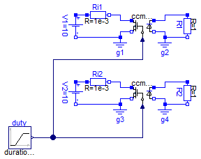
Information
Extends from Modelica.Icons.Example (Icon for runnable examples).
Modelica definition
model CCM_DCMXVerification
extends Modelica.Icons.Example;
Modelica.Blocks.Sources.Ramp duty(
duration=0.8,
startTime=0.1,
height=0.8,
offset=0.1);
Electrical.CCM_DCM1 ccm_dcm1(fs=100e3, Le=0.6e-6);
Modelica.Electrical.Analog.Sources.ConstantVoltage V1(V=10);
Modelica.Electrical.Analog.Basic.Resistor R1(R=1);
Modelica.Electrical.Analog.Basic.Ground g1;
Modelica.Electrical.Analog.Basic.Ground g2;
Modelica.Electrical.Analog.Basic.Resistor Ri1(R=1e-3);
Electrical.CCM_DCM2 ccm_dcm2(
fs=100e3,
n=2,
Le=0.6e-6);
Modelica.Electrical.Analog.Sources.ConstantVoltage V2(V=10);
Modelica.Electrical.Analog.Basic.Resistor R2(R=1);
Modelica.Electrical.Analog.Basic.Ground g3;
Modelica.Electrical.Analog.Basic.Ground g4;
Modelica.Electrical.Analog.Basic.Resistor Ri2(R=1e-3);
equation
connect(V1.p,Ri1. p);
connect(Ri1.n, ccm_dcm1.p1);
connect(g1.p, ccm_dcm1.n1);
connect(R1.p, ccm_dcm1.p2);
connect(g2.p, ccm_dcm1.n2);
connect(R1.n, g2.p);
connect(V1.n,g1. p);
connect(V2.p,Ri2. p);
connect(V2.n,g3. p);
connect(Ri2.n, ccm_dcm2.p1);
connect(g3.p, ccm_dcm2.n1);
connect(g4.p, ccm_dcm2.n2);
connect(R2.n, g4.p);
connect(R2.p, ccm_dcm2.p2);
connect(duty.y, ccm_dcm2.d);
connect(duty.y, ccm_dcm1.d);
end CCM_DCMXVerification;
PVArray verification

Information
A ramp DC voltage source is applied in parallel to an
instance of the PVArray model. The voltage ramp is
configured to sweep from -10 volts to 35 volts in 1
second. This provides the enough voltage range to cover
all of the PV array's working range when initialized
with default values.
To use the example, simulate the model and start by
displaying both voltage and current of the ramp voltage
source. A figure like the following should be displayed:
Notice how the variation in the current delivered by the
PV array (sinked by the voltage source) reflects the
familiar PV module curve.
Modify the values for the irradiance and temperature
blocks and see how these changes are reflected in a
change in the PV curve, accurately reflecting the
effects of these variables in the PV module
performance.
Extends from Modelica.Icons.Example (Icon for runnable examples).
Modelica definition
SimpleBattery verification
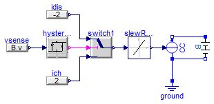
Information
This example provides a charge/discharge control logic
to a current source in parallel with the battery
model. The control is configured to put the battery
through charge/discharge cycles for as long as the
simulation runs:
Notice how the charge and discharge cycles take about 30
minutes, which is what was to be expected by
charging/discharging a 1A.h battery with a 2A
current.
Extends from Modelica.Icons.Example (Icon for runnable examples).
Modelica definition
model SimpleBatteryVerification
extends Modelica.Icons.Example;
Modelica.Electrical.Analog.Sources.SignalCurrent CC;
Modelica.Electrical.Analog.Basic.Ground ground;
Electrical.SimpleBattery B(Q=1, DoDini=0.5);
Modelica.Blocks.Nonlinear.SlewRateLimiter slewRateLimiter(Rising=4);
Modelica.Blocks.Logical.Hysteresis hysteresis(uHigh=4.19, uLow=0.1);
Modelica.Blocks.Logical.Switch switch1;
Modelica.Blocks.Sources.RealExpression idis(y=-2);
Modelica.Blocks.Sources.RealExpression ich(y=2);
Modelica.Blocks.Sources.RealExpression vsense(y=B.v);
equation
connect(ground.p, CC.p);
connect(CC.p, B.n);
connect(CC.n, B.p);
connect(slewRateLimiter.y, CC.i);
connect(switch1.y, slewRateLimiter.u);
connect(hysteresis.y, switch1.u2);
connect(idis.y, switch1.u1);
connect(ich.y, switch1.u3);
connect(vsense.y, hysteresis.u);
end SimpleBatteryVerification;
SwitchingPWM verification
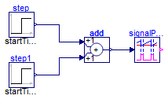
Information
This model provides a changing duty cycle with the use
of two step blocks. When running the simulation with the
provided values, plotting the fire output generates the
following graph:
Through inspection of the plot, it can be seen how the
signal constitutes a PWM signal with a duty cycle
changing in steps through the values 0.2, 0.5 and
0.8. Zoom into the signal to confirm this fact as well
as the value of the period, set at 10 milliseconds.
Extends from Modelica.Icons.Example (Icon for runnable examples).
Modelica definition
SwitchingCPM verification
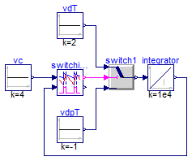
Information
The switching CPM block requires the vs input,
corresponding to the voltage output of the current
sensor. In order to simplify things, a switch with some
constant sources and an integrator are used to emulate
the behaviour of an inductor. This setup creates the
conditions to exercise the CPM block, as can be seen in
the following figure:
>
Extends from Modelica.Icons.Example (Icon for runnable examples).
Modelica definition
model SwitchingCPMVerification
extends Modelica.Icons.Example;
Control.SwitchingCPM switchingCPM(
vcMax=5,
dMin=0.05,
dMax=0.95,
fs=200e3,
Va=0.01);
Modelica.Blocks.Continuous.Integrator integrator(initType=Modelica.Blocks.Types.Init.InitialState,
y_start=3.99,
k=1e4);
Modelica.Blocks.Sources.Constant vdT(k=2);
Modelica.Blocks.Logical.Switch switch1;
Modelica.Blocks.Sources.Constant vdpT(k=-1);
Modelica.Blocks.Sources.Constant vc(k=4);
equation
connect(vdT.y, switch1.u1);
connect(switch1.y, integrator.u);
connect(vdpT.y, switch1.u3);
connect(switchingCPM.c, switch1.u2);
connect(integrator.y, switchingCPM.vs);
connect(vc.y, switchingCPM.vc);
end SwitchingCPMVerification;
DeadTime verification
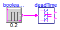
Information
Extends from Modelica.Icons.Example (Icon for runnable examples).
Modelica definition
Averaged CPM_CCM verification
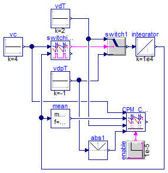
Information
Extends from Modelica.Icons.Example (Icon for runnable examples).
Modelica definition
model CPM_CCMVerification
extends Modelica.Icons.Example;
Control.SwitchingCPM switchingCPM(
dMin=0.05,
dMax=0.95,
fs=200e3,
vcMax=10,
Va=0.01);
Modelica.Blocks.Continuous.Integrator integrator(initType=Modelica.Blocks.Types.Init.InitialState,
k=1e4,
y_start=3.99);
Modelica.Blocks.Sources.Constant vdT(k=2);
Modelica.Blocks.Logical.Switch switch1;
Modelica.Blocks.Sources.Constant vdpT(k=-1);
Modelica.Blocks.Sources.Constant vc(k=4);
Control.CPM_CCM CPM_CCM(
L=1e-4,
fs=200e3,
Rf=1,
d_disabled=0.05,
Va=0.01);
Modelica.Blocks.Math.Abs abs1;
Modelica.Blocks.Sources.BooleanStep enable(startTime=1e-5);
Modelica.Blocks.Math.Mean mean(f=200e3);
equation
connect(vdT.y, switch1.u1);
connect(switch1.y, integrator.u);
connect(vdpT.y, switch1.u3);
connect(switchingCPM.c, switch1.u2);
connect(integrator.y, switchingCPM.vs);
connect(vc.y, switchingCPM.vc);
connect(CPM_CCM.vc, switchingCPM.vc);
connect(abs1.u, vdpT.y);
connect(abs1.y, CPM_CCM.vm2);
connect(CPM_CCM.vm1, vdT.y);
connect(mean.y, CPM_CCM.vs);
connect(mean.u, switchingCPM.vs);
connect(enable.y, CPM_CCM.enable);
end CPM_CCMVerification;
Averaged CPM verification
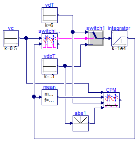
Information
Extends from Modelica.Icons.Example (Icon for runnable examples), Modelica.Icons.UnderConstruction (Icon for classes that are still under construction).
Modelica definition
model CPMVerification
extends Modelica.Icons.Example;
extends Modelica.Icons.UnderConstruction;
Control.SwitchingCPM switchingCPM(
dMin=0.05,
dMax=0.95,
fs=200e3,
vcMax=10,
Va=0.1);
Modelica.Blocks.Continuous.LimIntegrator
integrator(initType=Modelica.Blocks.Types.Init.InitialState,
k=1e4,
outMin=0,
outMax=Modelica.Constants.inf);
Modelica.Blocks.Sources.Constant vdT(k=6);
Modelica.Blocks.Logical.Switch switch1;
Modelica.Blocks.Sources.Constant vdpT(k=-3);
Modelica.Blocks.Sources.Constant vc(k=0.5);
Control.CPM CPM(
fs=200e3,
Rf=1,
L=1e-4,
Va=0.1);
Modelica.Blocks.Math.Abs abs1;
Modelica.Blocks.Math.Mean mean(f=200e3);
equation
connect(vdT.y, switch1.u1);
connect(switch1.y, integrator.u);
connect(vdpT.y, switch1.u3);
connect(switchingCPM.c, switch1.u2);
connect(integrator.y, switchingCPM.vs);
connect(vc.y, switchingCPM.vc);
connect(CPM.vc, switchingCPM.vc);
connect(abs1.u, vdpT.y);
connect(abs1.y, CPM.vm2);
connect(CPM.vm1, vdT.y);
connect(mean.y, CPM.vs);
connect(mean.u, switchingCPM.vs);
end CPMVerification;
Park transforms verification
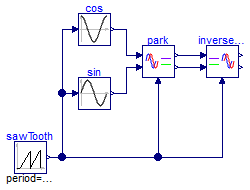
Information
This example provides some easy input for the Park
transform blocks to check that calculations are being
done as expected. Run the simulation and you should get
something like the following figure:
As expected, d is equal to the peak amplitude
of the input signal and q sets at zero. Feeding
the signals back to the inverse transformation block
recreates the original signals (which overlap them on
the plot).
Extends from Modelica.Icons.Example (Icon for runnable examples).
Modelica definition
PLL verification

Information
This simple example provides a sinusoidal input to the
PLL block and applies the output provided by the PLL,
the calculated phase of the input sine, to drive a sine
block so that the synchronization capabilities of the
PLL can be visualized.
Run the model and plot the output of the sinusoidal
source and the output of the sine block to see how,
after some short transient, the PLL successfully follows
the reference:
Extends from Modelica.Icons.Example (Icon for runnable examples).
Modelica definition
MPPT controller verification
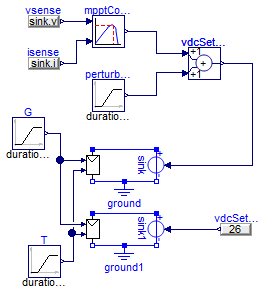
Information
This examples places an MPPT controller closing the loop
for a voltage source connected to a PV array. The MPPT
controller senses the power coming out of the PV array
and provides a setpoint for the voltage source. This
changes the operation point of the PV array with the
goal of maximizing its output power for any given solar
irradiation and junction temperature conditions.
The model is designed to challenge the control by
ramping solar irradiation, temperature at different
times and by injecting a perturbation into the control
loop:
The MPPT controller successfully deals with these
changing conditions as shown in the following plots,
which compares the static PV array control with the MPPT
control:
Extends from Modelica.Icons.Example (Icon for runnable examples).
Modelica definition
model MPPTControllerVerification
extends Modelica.Icons.Example;
Modelica.Electrical.Analog.Basic.Ground ground;
Electrical.PVArray pVArray;
Modelica.Electrical.Analog.Sources.SignalVoltage sink;
Control.MPPTController mpptController(
sampleTime=1,
pkThreshold=0.01,
vrefStep=1,
vrefStart=5);
Modelica.Blocks.Sources.Ramp G(
offset=1000,
height=-500,
startTime=30,
duration=10);
Modelica.Blocks.Sources.Ramp T(
height=-25,
offset=273.15 + 25,
startTime=50,
duration=50);
Modelica.Blocks.Math.Add vdcSetpoint;
Modelica.Blocks.Sources.Ramp perturbation(
height=10,
offset=0,
duration=20,
startTime=130);
Modelica.Blocks.Sources.RealExpression vsense(y=sink.v);
Modelica.Blocks.Sources.RealExpression isense(y=sink.i);
Modelica.Blocks.Sources.RealExpression vdcSetpoint1(y=26);
Modelica.Electrical.Analog.Basic.Ground ground1;
Electrical.PVArray pVArray1;
Modelica.Electrical.Analog.Sources.SignalVoltage sink1;
equation
connect(G.y, pVArray.G);
connect(vdcSetpoint.y, sink.v);
connect(perturbation.y, vdcSetpoint.u2);
connect(pVArray.p, sink.p);
connect(vsense.y, mpptController.u1);
connect(mpptController.y, vdcSetpoint.u1);
connect(isense.y, mpptController.u2);
connect(pVArray1.p, sink1.p);
connect(sink1.v, vdcSetpoint1.y);
connect(T.y, pVArray1.T);
connect(T.y, pVArray.T);
connect(G.y, pVArray1.G);
connect(pVArray.n, ground.p);
connect(sink.n, ground.p);
connect(pVArray1.n, ground1.p);
connect(ground1.p, sink1.n);
end MPPTControllerVerification;
Automatically generated Mon Sep 11 16:11:44 2017.
 PVSystems.Examples.Verification.IdealCBSwitchVerification
PVSystems.Examples.Verification.IdealCBSwitchVerification


 PVSystems.Examples.Verification.CPMVerification
PVSystems.Examples.Verification.CPMVerification PVSystems.Examples.Verification.ParkTransformsVerification
PVSystems.Examples.Verification.ParkTransformsVerification